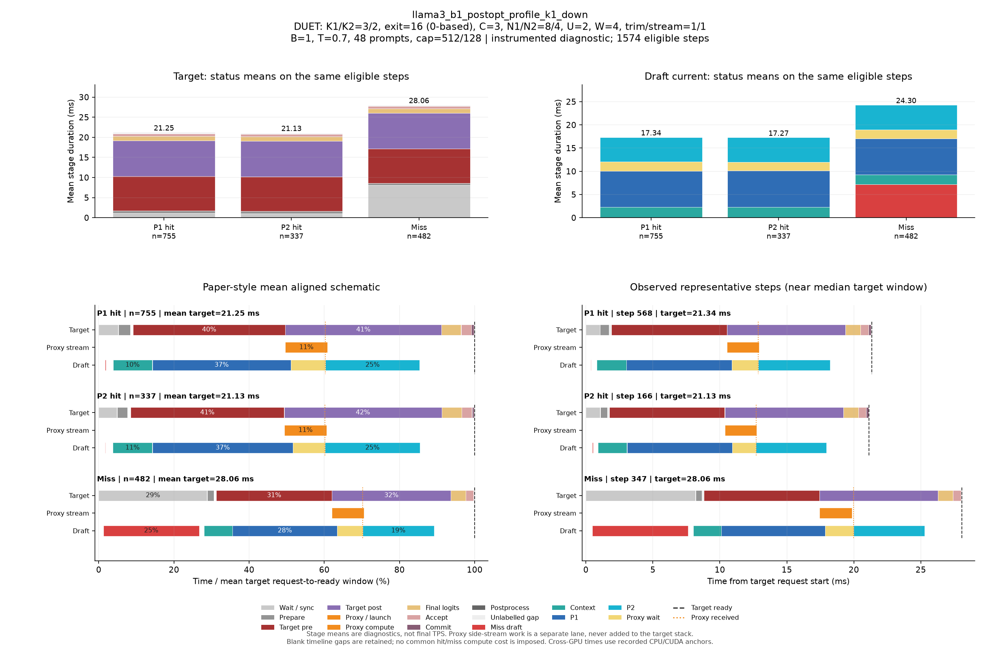

DUET: K1/K2=3/2, exit=16 (0-based), C=3, N1/N2=8/4, U=2, W=4, trim/stream=1/1
| Pass | 용도 | N | B | T | Seed | AL* | Cache hit | TPS* | Raw TPS |
|---|---|---|---|---|---|---|---|---|---|
| 0 | profile-diagnostic | 48 | 1 | 0.7 | 6800 | 2.550 | 69.21% | 91.85 | 91.49 |
Input/output cap: 512/128 · GPUs: 4,5 · draft seed: 0 · source: 641f5ce88ead693790ced9a3261b01241c94e8f4
PNG · 벡터 PDF · 원본 결과 JSON
세부 trace: 1574 eligible steps. Target 원본 · Draft 원본
제외 수: {"initial": 19, "output_boundary": 45, "capture_or_next": 12}
왼쪽 아래는 상태별 평균 정렬 schematic, 오른쪽 아래는 실제 대표 step입니다. %의 분모는 각 상태의 평균 target request→ready 시간이며 phase overlap은 별도 lane에 표시합니다.

{
"args": {
"target": "/data/chokwans99/models/layerskip-llama3-8B",
"draft": "/home/chokwans99/models_mlsys/Qwama-0.5B-Instruct",
"mode": "duet-tree",
"batches": [
1
],
"temperatures": [
0.7
],
"seeds": [
6800
],
"target_tp": 1,
"prompts": "/home/chokwans99/PSD-mlsys-coverage/results/mlsys_coverage/round5/tuning48.json",
"limit": 0,
"max_new_tokens": 128,
"max_model_len": 2048,
"input_cap": 512,
"k1": 3,
"k2": 2,
"draft_fan_out": 2,
"proxy_fan_out": 1,
"p1_tree": true,
"p1_verify_nodes": null,
"p2_verify_nodes": null,
"exit_layer": 16,
"p1_nodes": 8,
"p2_nodes": 4,
"tree_width": 3,
"p1_roots": 2,
"p2_budget": null,
"tree_root_count": null,
"tree_beta": 0.5,
"tree_proxy_threshold": 0.01,
"tree_conf_threshold": 0.03,
"root_source": "complement",
"root_normalization": "full",
"root_overlap_mix": 0.25,
"memory_fraction": 0.45,
"ignore_eos": false,
"greedy_only": false,
"audit_preemption": false,
"ragged_limits": false,
"tree_calibration_dir": null,
"preflight_test": null,
"output": "/home/chokwans99/PSD-mlsys-coverage/results/mlsys_coverage/round5/llama3_postopt_l0_profile/llama3_b1_postopt_profile_k1_down.json"
},
"engine_kwargs": {
"num_gpus": 2,
"max_num_seqs": 1,
"max_model_len": 2048,
"max_num_batched_tokens": 2048,
"gpu_memory_utilization": 0.45,
"speculate": true,
"draft_async": true,
"greedy_only": false,
"jit_speculate": true,
"speculate_k": 5,
"async_fan_out": 3,
"duet_p1_tree_policy": "on",
"duet_p2_tree_policy": "on",
"draft": "/home/chokwans99/models_mlsys/Qwama-0.5B-Instruct",
"duet_enabled": true,
"duet_exit_layer": 16,
"duet_phase1_k": 3,
"duet_phase2_k": 2,
"duet_draft_fan_out": 2,
"duet_p2_tree_max_nodes": 4,
"duet_p2_tree_verify_nodes": 4,
"duet_p1_tree_max_nodes": 8,
"duet_p1_tree_verify_nodes": 8,
"duet_tree_c_tensor": 3,
"duet_p1_roots_per_position": 2,
"duet_p2_budget": null,
"duet_tree_root_count": null,
"duet_tree_beta": 0.5,
"duet_tree_proxy_threshold": 0.01,
"duet_tree_conf_threshold": 0.03,
"duet_root_source": "complement",
"duet_root_normalization": "full",
"duet_root_overlap_mix": 0.25
},
"env": {
"CUDA_VISIBLE_DEVICES": "4,5",
"SSD_CUDA_ARCH": "8.9",
"SSD_ATTN_BACKEND": "auto",
"SSD_DIST_PORT": "33600",
"OMP_NUM_THREADS": "4",
"SSD_SEED": "0",
"SSD_CHAIN_PROXY_GRAPH": "1",
"SSD_FAST_VERIFY": "1",
"SSD_BATCHED_PROXY_GRAPH": "1",
"SSD_DUET_EXIT_REPLICA": "0",
"SSD_ASYNC_PROXY_SEND": "1",
"SSD_PROXY_STREAM": "0",
"SSD_BATCHED_TREE": "1",
"SSD_TREE_EXPANSION_POLICY": "reach_gain_frontier",
"SSD_TREE_REACH_CALIBRATION": "/home/chokwans99/PSD-mlsys-coverage/results/mlsys_coverage/round4/calibration/reach.json",
"SSD_TREE_GAIN_CALIBRATION": "/home/chokwans99/PSD-mlsys-coverage/results/mlsys_coverage/round4/calibration/gain.json",
"SSD_DUET_MISS_K": "4",
"SSD_TREE_FUSED_MATH": "1",
"SSD_BATCH_TREE_BULK_EXPORT": "1",
"SSD_TREE_PARALLEL_INSERT": "0",
"SSD_PROFILE_DUET": "1",
"SSD_PROFILE_DUET_MAX_EVENTS": "100000",
"SSD_TREE_SHAPE_METRICS": "1",
"SSD_PROFILE_DIR": "/home/chokwans99/PSD-mlsys-coverage/results/mlsys_coverage/round5/profiles/llama3_b1_postopt_profile_k1_down",
"SSD_HF_CACHE": "/data/chokwans99/models",
"SSD_DATASET_DIR": "/home/chokwans99/PSD-mlsys-coverage/results/mlsys_coverage/round5",
"SSD_TREE_LADDER_TRIM": "1",
"SSD_BATCH_TREE_PROXY_STREAM": "1",
"SSD_PROFILE_DUET_DETAIL": "1"
},
"effective_features": {
"fast_verify": true,
"batched_proxy_graph": true,
"exit_replica": false,
"jit_speculate": true,
"duet_jit_short": true,
"miss_depth": 4,
"miss_width": 1,
"tree_fused_math": true,
"tree_parallel_insert": false,
"bulk_export": true
},
"resolved_env": {
"SSD_CUDA_ARCH": "8.9",
"SSD_ATTN_BACKEND": "auto",
"SSD_DIST_PORT": "33600",
"SSD_SEED": "0",
"SSD_CHAIN_PROXY_GRAPH": "1",
"SSD_FAST_VERIFY": "1",
"SSD_BATCHED_PROXY_GRAPH": "1",
"SSD_DUET_EXIT_REPLICA": "0",
"SSD_ASYNC_PROXY_SEND": "1",
"SSD_PROXY_STREAM": "0",
"SSD_BATCHED_TREE": "1",
"SSD_TREE_EXPANSION_POLICY": "reach_gain_frontier",
"SSD_TREE_REACH_CALIBRATION": "/home/chokwans99/PSD-mlsys-coverage/results/mlsys_coverage/round4/calibration/reach.json",
"SSD_TREE_GAIN_CALIBRATION": "/home/chokwans99/PSD-mlsys-coverage/results/mlsys_coverage/round4/calibration/gain.json",
"SSD_DUET_MISS_K": "4",
"SSD_TREE_FUSED_MATH": "1",
"SSD_BATCH_TREE_BULK_EXPORT": "1",
"SSD_TREE_PARALLEL_INSERT": "0",
"SSD_PROFILE_DUET": "1",
"SSD_PROFILE_DUET_MAX_EVENTS": "100000",
"SSD_TREE_SHAPE_METRICS": "1",
"SSD_PROFILE_DIR": "/home/chokwans99/PSD-mlsys-coverage/results/mlsys_coverage/round5/profiles/llama3_b1_postopt_profile_k1_down",
"SSD_HF_CACHE": "/data/chokwans99/models",
"SSD_DATASET_DIR": "/home/chokwans99/PSD-mlsys-coverage/results/mlsys_coverage/round5",
"SSD_TREE_LADDER_TRIM": "1",
"SSD_BATCH_TREE_PROXY_STREAM": "1",
"SSD_PROFILE_DUET_DETAIL": "1",
"SSD_FORCE_SPLIT_K1K2": "1",
"SSD_DUET_JIT_SHORT": "1",
"SSD_SHM_NAME": "ssd_3156516"
},
"runtime_source_sha256": {
"ssd/ssd/__init__.py": "f1a221b38f55b42ef0619cba48a411acbbd1965c4845b4643f77443b7ce77950",
"ssd/ssd/config.py": "865ddb5e09ec11f4bc8511dad3f5abad39a6ab412cf0bbcd6213179b5245fa31",
"ssd/ssd/engine/block_manager.py": "05d873619b419d31f47b4be4025bc7c9f11759f5f0bc3f65fbff3a1e8f94660a",
"ssd/ssd/engine/draft_runner.py": "8cb7e22f725de2c0d9c85912ae04f88f1674f34c0cee4b5beccc9a3b5be1c174",
"ssd/ssd/engine/helpers/batch_tree_common.py": "739feeb975c20d0adbdae51735b8983aa6cae8b59d6237b285db0c766d558f27",
"ssd/ssd/engine/helpers/batch_tree_draft.py": "f361030685350183884cc55b9058945515bb00da53fc86541f7902bfd2138528",
"ssd/ssd/engine/helpers/batch_tree_forward.py": "bb51049bd2f47909d455a065dc970330e5ff40cc572ab4d12d760c7188f818f6",
"ssd/ssd/engine/helpers/batch_tree_inputs.py": "c0a05d13ba0e63ecbc920425ddd6a98dc60001d93d73085e75d2d4a9b110a066",
"ssd/ssd/engine/helpers/batch_tree_roots.py": "ad3c4e772392c1043284ac4912d606543f3fd76167135b73e4f72a700e6820c7",
"ssd/ssd/engine/helpers/batch_tree_sampling.py": "ac466b59a1dab2a34e8630db347a2c8d16de3e00a526b258537a82245fbb5006",
"ssd/ssd/engine/helpers/batch_tree_verify.py": "f1258a91f3aea07be44267602808a8075769ee2e1908dad67ff49f7b1bbe811b",
"ssd/ssd/engine/helpers/batched_proxy.py": "6ed4f9b85ff8cf9c24b7ad43a1b7377d08123eeef5307366a373dacda184da86",
"ssd/ssd/engine/helpers/batched_tree_executor.py": "098d64cad2d20d96091631f6bc91da73b1e893ec400c3431a4ed68d007a9ef45",
"ssd/ssd/engine/helpers/cudagraph_helpers.py": "0436aec61d05d0b79696a48665042e364f3f4c50d853b68dc424e435b54be0c9",
"ssd/ssd/engine/helpers/e0_trace.py": "23ecd9bce2587cbef3f99c8894964c0d9642d33d372bd7be4954a5a2840a142e",
"ssd/ssd/engine/helpers/mask_helpers.py": "8ada4e709a6ab310ee920a7176b3684f89860022fc659442f6cb02ed5fb87d88",
"ssd/ssd/engine/helpers/p1_tree.py": "f48ae6b01e593d2598262b34007a6b58dde9e57e94138dde62f81d5526637398",
"ssd/ssd/engine/helpers/p2_tree.py": "73b0a512d834ab3a4608d9cd898b13b32630dd3b914b49e753c1116ac0640b41",
"ssd/ssd/engine/helpers/p2_tree_executor.py": "cfb04f959fd08baf3819a688a907cac4e3071a2727085ea08ca089b50a21e82e",
"ssd/ssd/engine/helpers/packed_tree_forward.py": "b903d6fe4d1fe18f95f6540f488acf40d469154100239429256eace61b1d7e76",
"ssd/ssd/engine/helpers/packed_verify.py": "a50ff24e93324840783b60102bfaeb3786711f05f64bd897708c779535c1820f",
"ssd/ssd/engine/helpers/root_policy.py": "4fd5cc949ee7c63db08060046bea197a62299c31af0a90990294ce39cf13a66e",
"ssd/ssd/engine/helpers/runner_helpers.py": "bfb570d8e018ee296a6c2a8c3c9e75919fd0eb1beb288ceb80121ad116419bf2",
"ssd/ssd/engine/helpers/speculate_types.py": "2929b5f3a176d04b6a4b01f092b224ad733dfda10a647bb73801cd346441ae91",
"ssd/ssd/engine/helpers/tree_expansion_policy.py": "47f818d1b8f284e56813af294723f6a934c3da0502b9ae4e611b54ba6fb85dac",
"ssd/ssd/engine/helpers/tree_fused_math.py": "930a1215363a3b6f878cbc4a71c3f59293f46aa2eab3c4938e5bb51e95868d2e",
"ssd/ssd/engine/helpers/tree_gain_allocation.py": "6f32c6a7b69272c1b42992d95c546bfd3980ccd71af3b3346e9df61977907b6a",
"ssd/ssd/engine/helpers/tree_host_topology.py": "86d0deab4da2932540a108c4c2b3560b8634837e71ba23783375c2001e4cf81c",
"ssd/ssd/engine/helpers/tree_layout.py": "4e5e47c54a4efd5a30ae8c528e1d2d9493d12aa5605c0e65c2f86ba874805be1",
"ssd/ssd/engine/helpers/tree_proxy_stream.py": "05d35738afa93627ba2dd56cd6bf4ca000938a9d02762dac5fde39f5c06009d0",
"ssd/ssd/engine/helpers/tree_rerank_gpu.py": "e4a8bff8828f983d6eb407504f87f2a9edf08a1750449fe46565e661f892b734",
"ssd/ssd/engine/helpers/tree_topology_gpu.py": "3a6cf8796faabbe8adef56deedf8956c1cf252a31e0491f3b71a8544bdcf89af",
"ssd/ssd/engine/llm_engine.py": "b0081876ef6470f91fa562acc0317074a85afa9aec8322182bda7749153db00f",
"ssd/ssd/engine/model_runner.py": "5fa9e910f38538c276a151113fc490be9c75ae9af2bf35ba6eaa5513b237a421",
"ssd/ssd/engine/scheduler.py": "52a36e8bb2abc26f775562a39bd95ea6cc8c70650e6193ddaa0fad762afb8ae4",
"ssd/ssd/engine/sequence.py": "6894715ef142074b118bfa3018b10826d2748518e9c8b71291064eb99fae9bd9",
"ssd/ssd/engine/speculator_async.py": "cd16395d5e5d7380d29f5a27e1495b6a40758c0452ce2cb40d996e2c3271c114",
"ssd/ssd/engine/speculator_sync.py": "30487afa7f5027735ebd752ca1a53003f1d56350f503ea91931ef64e7aab115e",
"ssd/ssd/engine/step.py": "525d3022561c9eee96ec076032bb27e281af744feb739ddc17e52344a9cafe8f",
"ssd/ssd/engine/verifier.py": "f6795547f278628312d2dd5ab0a28e9f34489b8e6d02038566a65fa3190a0928",
"ssd/ssd/layers/activation.py": "13d88b460e7610df28c6a7c719dd8bf21c5c59ae0f85c94d505d499215618a82",
"ssd/ssd/layers/attention.py": "bbafa69d9b52dedf81542f2c3227b7f061de11c679a6681a16b0c137ccfc672b",
"ssd/ssd/layers/embed_head.py": "b896a56b908d75c8f30462b0b1a4ce634276ddb41165fdaa0220c55a2ddf7257",
"ssd/ssd/layers/fi_attn.py": "4b0a275d020c1c3ce37f4e2a6c04bff12577d6f11feec7d79959652300fc9a0c",
"ssd/ssd/layers/layernorm.py": "a076c8d2e31d2597119d8504a69afd8711b41a29b5ccb7e1bf111a6c7277400e",
"ssd/ssd/layers/linear.py": "82c096262013516c5f0a43f7c28f23aa6db6b14f52cbe1ce1dacc5f9d5c4b0b6",
"ssd/ssd/layers/rotary_embedding.py": "1bcca21cf5e4d81c11a5c55d59a6033874c4e6a0003cc4ae8e1aa6165976a723",
"ssd/ssd/layers/sampler.py": "df22591a229ae5c2f62d4797707470ebccb8e55f7064577bc24a656ed797f213",
"ssd/ssd/llm.py": "496950f31428f674b70e8e137e029aa16dd82fdc8d8b8cc76f9ebdce86f7f653",
"ssd/ssd/models/eagle3_draft_llama3.py": "0d6e713a419cf884fc85984f9a2a6de520119032075a7c99158e0df7e2faca84",
"ssd/ssd/models/llama3.py": "ac801bd73e999f04a6fc862ca1d49bc94c88315456cfb6cb1215a503bcc5e07d",
"ssd/ssd/models/qwen2.py": "6804e3662a173368632e5f05b9893cc0cd28a61ac9bd25dbe8cd6f387ca0d1ca",
"ssd/ssd/models/qwen3.py": "535495bf69933fd9c677275453b801189e2c3c78a94fcc5133fc65b88c9f69c7",
"ssd/ssd/paths.py": "72c52420daaf6d457c60235617efc3f8b1e3ae208a35f3bc45438adc9d7e01ac",
"ssd/ssd/quant/__init__.py": "a69f0de0a516ba2bf9e13680b75b8f5d538c2eb281b095662ed1515f8b0f8698",
"ssd/ssd/quant/adapter.py": "fbb1ce4a198a585c31b0102555d1f84d18b09b0de1b90a5808d93ec8ff7ac271",
"ssd/ssd/quant/awq_calibrate.py": "116807eca0a3e4e001aa24a3344031416e4060a6c1b2e39f59829fba09484126",
"ssd/ssd/quant/build.py": "37f9c72ac69af213f2720c86faf380b8a46baaad0b98bf5f2e3c7fa9b3fbc43c",
"ssd/ssd/quant/config.py": "080c327b2297d0905f8fddc8d994aa7b9dc1086d7703d951471d48cea8723a1d",
"ssd/ssd/quant/importer.py": "c8990b69bc9e4e152e7e80b7f08f273c6a4652c1f7e95a8247f85e50030f4f92",
"ssd/ssd/quant/init_context.py": "6aa3dc3f6e95d8902fa7244d0010110b6fcf1ffdccedd6eaa389204339fc214f",
"ssd/ssd/quant/io.py": "f44f98a57351ff1063b7423d2f8390a565a30796fd6c3beaeaa8825f906e66b5",
"ssd/ssd/quant/loader.py": "14f901b1f53a3650be7eff497f626469e2b1fbc487202c639d33c8dd4c9047fb",
"ssd/ssd/quant/marlin.py": "4f1996e9f63d7109e92a3a7ec5350069ba67d7659f2149e99b84ca3c6626b241",
"ssd/ssd/quant/marlin_utils.py": "f64ec8d7ec8260556abd21e229567971a928882f14b93d288a6732d55c12fc90",
"ssd/ssd/quant/naming.py": "7ba73900af5e6d6fa2d1907bd2611625fc72f28a1fb9ea4834cd9a45901632d6",
"ssd/ssd/quant/pack.py": "b7dd683b7cdbfbb6f4ce1e13a51a72240a8dc3a35b7ed652dc664d26bb384711",
"ssd/ssd/quant/state.py": "82cb1050a3b1776765df7ad8f6c59c23a86ac8d1d4cc3c974cded7f8e762f806",
"ssd/ssd/sampling_params.py": "7f79868c4ca115bb18e017411a6c5545f354aa858aa0b8076aafb756d0785032",
"ssd/ssd/utils/async_helpers/async_spec_helpers.py": "0d70779098c5051fcba5d3add5ff0b7896139f1b7789babe701a8df6eaa40f24",
"ssd/ssd/utils/async_helpers/duet_policy.py": "1fb3e1ec1c41a9cda5f531f8c732b09145c7d87ea79d74c331b8176f11f22aaf",
"ssd/ssd/utils/async_helpers/nccl_pack.py": "6330e785f3e81acffe25a82061d3098f7834ad3c2d07bb071d79ed9923b18dc1",
"ssd/ssd/utils/async_helpers/tests.py": "6491ced36a2a6f06d8cf411204b1190d2ca0bc700cd0becf79c3f4cd8abcd87e",
"ssd/ssd/utils/context.py": "ce55eb45f00c91412946dd1c96f5c8f972372dd4c8069770c48e120773f301fc",
"ssd/ssd/utils/int8_debug.py": "9a71dbf2b997a9c8d9b776cc3659c8dbf32ce5411eb5cedb4a73368cee60d3d7",
"ssd/ssd/utils/loader.py": "c008eac34810772e8d9f51da896c00867481f3e1a0e6f725e0d06599c0aab59e",
"ssd/ssd/utils/misc.py": "1084b630f174d651b78b01c4ba2dff147f18d3cf52a200704b4b9eab2b72b66c",
"ssd/ssd/utils/quantize.py": "c0ee73d55f3781eba88007325d5e9e53e66ad952e0e8f19143aa8c50bc39f406",
"ssd/ssd/utils/verify.py": "0cf11b9ba19a73e9c39087fccde43071464c6f3b964e00081ebadc747ef142a4",
"ssd/ssd/utils/verify_fast.py": "23b05b7e5032fe72c8f2ef5bd7a69aa874818b08b52ea7fc0344a54c76ea28d9",
"ssd/bench/mlsys_campaign.py": "059b6316ba33e867e1fcf099a8180c186fa70b916692eca386d2a4a347b0f26f",
"ssd/bench/mlsys_coverage.py": "70b2afaf05bbbd5760c2a4f96f801976479209ca1d7a8f9eb8598139e686bdbc",
"ssd/bench/mlsys_greedy_audit.py": "b9815fd03ded7f30f7c0408629782156e73f5ceaab9f0b3b720956f5c00da141",
"ssd/bench/mlsys_preemption_audit.py": "f891ff5a69a59fb8c93e7952f9d48ac16adb7fef074763089f14d4505ecad80d",
"ssd/bench/mlsys_summarize.py": "0235aa2b56eb59c41c429351d77e90e16c52ccdf58c43e3578dd03df0f6095bd",
"ssd/bench/mlsys_tree_observer.py": "8c18248c9ef1953e2e821613099f14d155978540536939288d4fb2aa897c6263",
"ssd/bench/mlsys_verify_bench.py": "3ddc36197874d239f41a1c135570d4d7a0940d615d3d396299bae46e377bce2e"
}
}{
"groups": [
{
"status": "P1 hit",
"n": 755,
"mean_target_ms": 21.250339517530225,
"mean_decode_ms": 21.289280633941686,
"mean_intervals": [
{
"lane": "Draft current",
"label": "Context",
"start": 0.804292498519089,
"end": 3.0088959090757053
},
{
"lane": "Draft current",
"label": "Miss draft",
"start": 0.36225633273851005,
"end": 0.40226950045453
},
{
"lane": "Draft current",
"label": "P1",
"start": 3.029275676272563,
"end": 10.853387718011211
},
{
"lane": "Draft current",
"label": "P2",
"start": 12.8145619003978,
"end": 18.133257580750826
},
{
"lane": "Draft current",
"label": "Proxy wait",
"start": 10.855521282928668,
"end": 12.812828681011073
},
{
"lane": "Proxy stream",
"label": "Proxy compute",
"start": 10.549309309270997,
"end": 12.919584289133944
},
{
"lane": "Target",
"label": "Accept",
"start": 20.48062462017236,
"end": 21.05943579989553
},
{
"lane": "Target",
"label": "Commit",
"start": 21.07099093254039,
"end": 21.207658582333696
},
{
"lane": "Target",
"label": "Final logits",
"start": 19.362042776638308,
"end": 20.47878724912934
},
{
"lane": "Target",
"label": "Postprocess",
"start": 21.234263105897714,
"end": 21.250339517530225
},
{
"lane": "Target",
"label": "Prepare",
"start": 1.1077193714924995,
"end": 1.767960329245258
},
{
"lane": "Target",
"label": "Proxy / launch",
"start": 10.538770813973533,
"end": 10.545919787804811
},
{
"lane": "Target",
"label": "Target post",
"start": 10.547828931366372,
"end": 19.360222227526027
},
{
"lane": "Target",
"label": "Target pre",
"start": 1.9399446515847516,
"end": 10.536758210327452
},
{
"lane": "Target",
"label": "Wait / sync",
"start": 0.0,
"end": 1.0856328787393128
}
],
"components": [
{
"lane": "Draft current",
"label": "Context",
"mean_ms": 2.2046034105566163,
"present_steps": 755,
"population": 755
},
{
"lane": "Draft current",
"label": "Miss draft",
"mean_ms": 0.04001316771601999,
"present_steps": 755,
"population": 755
},
{
"lane": "Draft current",
"label": "P1",
"mean_ms": 7.824112041738649,
"present_steps": 755,
"population": 755
},
{
"lane": "Draft current",
"label": "P2",
"mean_ms": 5.318695680353025,
"present_steps": 755,
"population": 755
},
{
"lane": "Draft current",
"label": "Proxy wait",
"mean_ms": 1.9573073980824047,
"present_steps": 755,
"population": 755
},
{
"lane": "Proxy stream",
"label": "Proxy compute",
"mean_ms": 2.3702749798629457,
"present_steps": 755,
"population": 755
},
{
"lane": "Target",
"label": "Accept",
"mean_ms": 0.5788111797231712,
"present_steps": 755,
"population": 755
},
{
"lane": "Target",
"label": "Commit",
"mean_ms": 0.1366676497933091,
"present_steps": 755,
"population": 755
},
{
"lane": "Target",
"label": "Final logits",
"mean_ms": 1.1167444724910307,
"present_steps": 755,
"population": 755
},
{
"lane": "Target",
"label": "Postprocess",
"mean_ms": 0.01607641163251258,
"present_steps": 755,
"population": 755
},
{
"lane": "Target",
"label": "Prepare",
"mean_ms": 0.6602409577527583,
"present_steps": 755,
"population": 755
},
{
"lane": "Target",
"label": "Proxy / launch",
"mean_ms": 0.007148973831277809,
"present_steps": 755,
"population": 755
},
{
"lane": "Target",
"label": "Target post",
"mean_ms": 8.812393296159655,
"present_steps": 755,
"population": 755
},
{
"lane": "Target",
"label": "Target pre",
"mean_ms": 8.5968135587427,
"present_steps": 755,
"population": 755
},
{
"lane": "Target",
"label": "Unlabelled gap",
"mean_ms": 0.23981013866449824,
"present_steps": 755,
"population": 755
},
{
"lane": "Target",
"label": "Wait / sync",
"mean_ms": 1.0856328787393128,
"present_steps": 755,
"population": 755
}
],
"mean_markers": {
"Final logits": 20.47878724912934,
"Target ready": 21.250339517530225,
"Proxy received": 12.813834342261814
},
"representative": {
"step_id": 568,
"status": "P1 hit",
"target_ms": 21.335937023162842,
"decode_ms": 21.377183962613344,
"source_counts": {
"1": 1
},
"physical_queries": 9,
"max_valid_nodes": 6,
"unlabelled_target_ms": 0.2500007152557373,
"intervals": [
{
"label": "Wait / sync",
"start": 0.0,
"end": 1.0429680347442627,
"lane": "Target",
"original_label": "target_spec_wait"
},
{
"label": "Prepare",
"start": 1.064453125,
"end": 1.71875,
"lane": "Target",
"original_label": "batch_tree_prepare"
},
{
"label": "Target pre",
"start": 1.9003901481628418,
"end": 10.523437023162842,
"lane": "Target",
"original_label": "batch_target_pre"
},
{
"label": "Proxy / launch",
"start": 10.525390148162842,
"end": 10.53125,
"lane": "Target",
"original_label": "batch_target_proxy"
},
{
"label": "Target post",
"start": 10.533203125,
"end": 19.375,
"lane": "Target",
"original_label": "batch_target_post"
},
{
"label": "Final logits",
"start": 19.376953125,
"end": 20.492187023162842,
"lane": "Target",
"original_label": "batch_target_final_logits"
},
{
"label": "Accept",
"start": 20.494140148162842,
"end": 21.087890148162842,
"lane": "Target",
"original_label": "batch_tree_accept"
},
{
"label": "Commit",
"start": 21.09960913658142,
"end": 21.292968034744263,
"lane": "Target",
"original_label": "batch_tree_commit"
},
{
"label": "Postprocess",
"start": 21.320312023162842,
"end": 21.335937023162842,
"lane": "Target",
"original_label": "target_postprocess"
},
{
"label": "Unlabelled gap",
"start": 1.0429680347442627,
"end": 1.064453125,
"lane": "Target",
"original_label": "derived_gap"
},
{
"label": "Unlabelled gap",
"start": 1.71875,
"end": 1.9003901481628418,
"lane": "Target",
"original_label": "derived_gap"
},
{
"label": "Unlabelled gap",
"start": 10.523437023162842,
"end": 10.525390148162842,
"lane": "Target",
"original_label": "derived_gap"
},
{
"label": "Unlabelled gap",
"start": 10.53125,
"end": 10.533203125,
"lane": "Target",
"original_label": "derived_gap"
},
{
"label": "Unlabelled gap",
"start": 19.375,
"end": 19.376953125,
"lane": "Target",
"original_label": "derived_gap"
},
{
"label": "Unlabelled gap",
"start": 20.492187023162842,
"end": 20.494140148162842,
"lane": "Target",
"original_label": "derived_gap"
},
{
"label": "Unlabelled gap",
"start": 21.087890148162842,
"end": 21.09960913658142,
"lane": "Target",
"original_label": "derived_gap"
},
{
"label": "Unlabelled gap",
"start": 21.292968034744263,
"end": 21.320312023162842,
"lane": "Target",
"original_label": "derived_gap"
},
{
"label": "Proxy compute",
"start": 10.537109136581421,
"end": 12.935546159744263,
"lane": "Proxy stream",
"original_label": "batch_proxy_side"
},
{
"label": "Miss draft",
"start": 0.3455350399017334,
"end": 0.3865511417388916,
"lane": "Draft current",
"original_label": "batch_miss_draft"
},
{
"label": "Context",
"start": 0.8240511417388916,
"end": 3.0076451301574707,
"lane": "Draft current",
"original_label": "batch_glue"
},
{
"label": "P1",
"start": 3.0291290283203125,
"end": 10.906082153320312,
"lane": "Draft current",
"original_label": "batch_p1_total"
},
{
"label": "Proxy wait",
"start": 10.908035039901733,
"end": 12.872879028320312,
"lane": "Draft current",
"original_label": "batch_proxy_wait"
},
{
"label": "P2",
"start": 12.874832153320312,
"end": 18.22639513015747,
"lane": "Draft current",
"original_label": "batch_p2_total"
}
],
"previous": [],
"markers": {
"Target ready": 21.335937023162842,
"Final logits": 20.492187023162842,
"Proxy received": 12.870926141738892
}
},
"step_ids": [
24,
25,
26,
27,
29,
31,
34,
35,
36,
37,
38,
39,
42,
44,
45,
50,
55,
61,
62,
65,
66,
67,
68,
69,
72,
73,
76,
79,
81,
84,
95,
99,
100,
101,
104,
105,
106,
107,
111,
114,
118,
121,
122,
123,
124,
125,
127,
128,
130,
133,
135,
137,
138,
139,
142,
147,
158,
159,
161,
162,
165,
167,
168,
174,
175,
176,
179,
180,
182,
183,
187,
188,
189,
190,
191,
192,
193,
194,
196,
197,
198,
199,
200,
201,
202,
203,
207,
210,
214,
215,
216,
217,
224,
225,
226,
229,
231,
232,
234,
239,
241,
245,
251,
253,
255,
257,
258,
262,
264,
266,
267,
270,
271,
272,
274,
275,
276,
277,
279,
280,
283,
284,
291,
292,
293,
294,
295,
296,
297,
298,
302,
303,
304,
305,
306,
309,
311,
313,
316,
320,
322,
323,
324,
325,
326,
327,
328,
329,
330,
336,
337,
344,
350,
357,
358,
360,
362,
363,
364,
366,
367,
368,
369,
370,
373,
375,
378,
379,
382,
383,
384,
387,
389,
396,
400,
403,
407,
408,
409,
410,
412,
413,
416,
417,
418,
419,
420,
423,
424,
425,
427,
428,
429,
430,
431,
432,
433,
434,
436,
437,
438,
439,
440,
441,
442,
443,
444,
445,
446,
447,
448,
449,
450,
451,
455,
456,
457,
458,
459,
461,
463,
474,
475,
476,
477,
478,
479,
480,
481,
482,
484,
485,
486,
487,
488,
489,
490,
491,
492,
493,
494,
495,
498,
499,
501,
502,
510,
513,
515,
516,
517,
518,
519,
524,
528,
530,
532,
533,
534,
535,
536,
538,
539,
541,
553,
559,
560,
562,
566,
568,
569,
570,
573,
574,
578,
582,
583,
586,
587,
591,
592,
593,
595,
596,
597,
599,
601,
603,
609,
610,
611,
618,
620,
624,
625,
628,
629,
630,
631,
632,
633,
634,
636,
637,
638,
642,
643,
644,
646,
647,
648,
650,
654,
655,
663,
676,
677,
678,
680,
687,
688,
689,
691,
693,
698,
699,
700,
706,
708,
709,
711,
716,
720,
722,
724,
726,
729,
730,
731,
733,
735,
736,
738,
739,
744,
746,
749,
750,
753,
756,
758,
763,
766,
770,
771,
773,
777,
778,
779,
783,
784,
788,
791,
792,
794,
795,
796,
800,
805,
808,
809,
812,
813,
814,
815,
816,
819,
820,
823,
825,
826,
828,
830,
834,
835,
836,
839,
842,
844,
845,
846,
847,
848,
849,
850,
855,
860,
866,
869,
870,
874,
875,
876,
879,
881,
887,
894,
900,
903,
904,
916,
917,
918,
922,
924,
929,
931,
938,
940,
943,
944,
946,
948,
950,
952,
953,
954,
955,
960,
962,
963,
970,
972,
974,
977,
982,
983,
988,
989,
990,
991,
992,
993,
997,
998,
999,
1000,
1002,
1003,
1004,
1005,
1007,
1014,
1015,
1018,
1020,
1021,
1023,
1024,
1044,
1050,
1051,
1052,
1053,
1054,
1055,
1056,
1057,
1061,
1065,
1078,
1083,
1085,
1088,
1089,
1092,
1094,
1095,
1097,
1098,
1099,
1100,
1101,
1102,
1103,
1104,
1105,
1106,
1108,
1109,
1110,
1111,
1112,
1113,
1114,
1115,
1116,
1117,
1118,
1119,
1125,
1126,
1129,
1132,
1136,
1138,
1139,
1140,
1141,
1142,
1144,
1145,
1147,
1149,
1150,
1151,
1152,
1153,
1158,
1160,
1164,
1165,
1169,
1177,
1179,
1180,
1183,
1184,
1185,
1191,
1197,
1199,
1201,
1205,
1206,
1207,
1211,
1213,
1214,
1216,
1217,
1220,
1221,
1228,
1231,
1232,
1233,
1234,
1235,
1236,
1239,
1241,
1242,
1243,
1244,
1245,
1246,
1247,
1248,
1249,
1250,
1251,
1253,
1254,
1255,
1256,
1257,
1258,
1259,
1260,
1261,
1262,
1269,
1270,
1273,
1274,
1275,
1276,
1280,
1281,
1282,
1283,
1284,
1285,
1286,
1287,
1290,
1291,
1296,
1298,
1302,
1305,
1309,
1312,
1313,
1315,
1320,
1321,
1322,
1324,
1325,
1326,
1327,
1328,
1334,
1340,
1343,
1346,
1349,
1354,
1355,
1356,
1366,
1369,
1373,
1375,
1376,
1377,
1378,
1379,
1381,
1382,
1383,
1385,
1386,
1387,
1388,
1394,
1395,
1397,
1398,
1405,
1407,
1408,
1411,
1412,
1413,
1415,
1417,
1420,
1422,
1425,
1427,
1429,
1433,
1434,
1437,
1438,
1440,
1441,
1442,
1443,
1445,
1446,
1451,
1452,
1453,
1455,
1457,
1458,
1459,
1461,
1463,
1467,
1469,
1473,
1474,
1475,
1476,
1477,
1478,
1479,
1480,
1482,
1483,
1484,
1485,
1486,
1489,
1490,
1491,
1492,
1494,
1495,
1496,
1506,
1507,
1510,
1511,
1513,
1514,
1517,
1519,
1526,
1536,
1542,
1545,
1547,
1548,
1549,
1550,
1555,
1556,
1557,
1558,
1559,
1560,
1561,
1562,
1563,
1564,
1565,
1567,
1569,
1570,
1571,
1575,
1576,
1577,
1581,
1583,
1586,
1589,
1590,
1593,
1595,
1596,
1597,
1604,
1607,
1608,
1610,
1611,
1616,
1619,
1620,
1621,
1622,
1623,
1628,
1629,
1630,
1632,
1635,
1636,
1637,
1639,
1640,
1641,
1644,
1645,
1646,
1647,
1648,
1649
],
"query_shapes": {
"4": 97,
"9": 658
}
},
{
"status": "P2 hit",
"n": 337,
"mean_target_ms": 21.131362183511435,
"mean_decode_ms": 21.17143655665639,
"mean_intervals": [
{
"lane": "Draft current",
"label": "Context",
"start": 0.7844600465248176,
"end": 3.003598362472715
},
{
"lane": "Draft current",
"label": "Miss draft",
"start": 0.34591391886023454,
"end": 0.3863427851249627
},
{
"lane": "Draft current",
"label": "P1",
"start": 3.0247219542721258,
"end": 10.906286952049866
},
{
"lane": "Draft current",
"label": "P2",
"start": 12.721173287852935,
"end": 18.042343583941815
},
{
"lane": "Draft current",
"label": "Proxy wait",
"start": 10.908532738331871,
"end": 12.719433149173634
},
{
"lane": "Proxy stream",
"label": "Proxy compute",
"start": 10.425297358623244,
"end": 12.811887146811102
},
{
"lane": "Target",
"label": "Accept",
"start": 20.391833427751806,
"end": 20.979741438206297
},
{
"lane": "Target",
"label": "Commit",
"start": 20.99146162084019,
"end": 21.08956121903145
},
{
"lane": "Target",
"label": "Final logits",
"start": 19.272487044688148,
"end": 20.390057058645638
},
{
"lane": "Target",
"label": "Postprocess",
"start": 21.115411166974983,
"end": 21.131362183511435
},
{
"lane": "Target",
"label": "Prepare",
"start": 1.0461867966354779,
"end": 1.613252332019523
},
{
"lane": "Target",
"label": "Proxy / launch",
"start": 10.414584137919395,
"end": 10.421685198294302
},
{
"lane": "Target",
"label": "Target post",
"start": 10.423567341060242,
"end": 19.270532467244994
},
{
"lane": "Target",
"label": "Target pre",
"start": 1.7891219030148198,
"end": 10.412701995153455
},
{
"lane": "Target",
"label": "Wait / sync",
"start": 0.0,
"end": 1.0228000125828411
}
],
"components": [
{
"lane": "Draft current",
"label": "Context",
"mean_ms": 2.2191383159478977,
"present_steps": 337,
"population": 337
},
{
"lane": "Draft current",
"label": "Miss draft",
"mean_ms": 0.04042886626472813,
"present_steps": 337,
"population": 337
},
{
"lane": "Draft current",
"label": "P1",
"mean_ms": 7.8815649977777404,
"present_steps": 337,
"population": 337
},
{
"lane": "Draft current",
"label": "P2",
"mean_ms": 5.321170296088878,
"present_steps": 337,
"population": 337
},
{
"lane": "Draft current",
"label": "Proxy wait",
"mean_ms": 1.8109004108417635,
"present_steps": 337,
"population": 337
},
{
"lane": "Proxy stream",
"label": "Proxy compute",
"mean_ms": 2.386589788187859,
"present_steps": 337,
"population": 337
},
{
"lane": "Target",
"label": "Accept",
"mean_ms": 0.5879080104544891,
"present_steps": 337,
"population": 337
},
{
"lane": "Target",
"label": "Commit",
"mean_ms": 0.09809959819125846,
"present_steps": 337,
"population": 337
},
{
"lane": "Target",
"label": "Final logits",
"mean_ms": 1.1175700139574904,
"present_steps": 337,
"population": 337
},
{
"lane": "Target",
"label": "Postprocess",
"mean_ms": 0.015951016536452298,
"present_steps": 337,
"population": 337
},
{
"lane": "Target",
"label": "Prepare",
"mean_ms": 0.5670655353840451,
"present_steps": 337,
"population": 337
},
{
"lane": "Target",
"label": "Proxy / launch",
"mean_ms": 0.007101060374907995,
"present_steps": 337,
"population": 337
},
{
"lane": "Target",
"label": "Target post",
"mean_ms": 8.846965126184752,
"present_steps": 337,
"population": 337
},
{
"lane": "Target",
"label": "Target pre",
"mean_ms": 8.623580092138635,
"present_steps": 337,
"population": 337
},
{
"lane": "Target",
"label": "Unlabelled gap",
"mean_ms": 0.24432171770656144,
"present_steps": 337,
"population": 337
},
{
"lane": "Target",
"label": "Wait / sync",
"mean_ms": 1.0228000125828411,
"present_steps": 337,
"population": 337
}
],
"mean_markers": {
"Final logits": 20.390057058645638,
"Target ready": 21.131362183511435,
"Proxy received": 12.715170509383658
},
"representative": {
"step_id": 166,
"status": "P2 hit",
"target_ms": 21.12890601158142,
"decode_ms": 21.1641660425812,
"source_counts": {
"2": 1
},
"physical_queries": 9,
"max_valid_nodes": 4,
"unlabelled_target_ms": 0.2158207893371582,
"intervals": [
{
"label": "Wait / sync",
"start": 0.0,
"end": 1.0566399097442627,
"lane": "Target",
"original_label": "target_spec_wait"
},
{
"label": "Prepare",
"start": 1.0761709213256836,
"end": 1.5878899097442627,
"lane": "Target",
"original_label": "batch_tree_prepare"
},
{
"label": "Target pre",
"start": 1.7431640625,
"end": 10.355468034744263,
"lane": "Target",
"original_label": "batch_target_pre"
},
{
"label": "Proxy / launch",
"start": 10.357420921325684,
"end": 10.364257097244263,
"lane": "Target",
"original_label": "batch_target_proxy"
},
{
"label": "Target post",
"start": 10.3662109375,
"end": 19.2255859375,
"lane": "Target",
"original_label": "batch_target_post"
},
{
"label": "Final logits",
"start": 19.2275390625,
"end": 20.34375,
"lane": "Target",
"original_label": "batch_target_final_logits"
},
{
"label": "Accept",
"start": 20.344726085662842,
"end": 20.917968034744263,
"lane": "Target",
"original_label": "batch_tree_accept"
},
{
"label": "Commit",
"start": 20.927733898162842,
"end": 21.09082007408142,
"lane": "Target",
"original_label": "batch_tree_commit"
},
{
"label": "Postprocess",
"start": 21.115233898162842,
"end": 21.12890601158142,
"lane": "Target",
"original_label": "target_postprocess"
},
{
"label": "Unlabelled gap",
"start": 1.0566399097442627,
"end": 1.0761709213256836,
"lane": "Target",
"original_label": "derived_gap"
},
{
"label": "Unlabelled gap",
"start": 1.5878899097442627,
"end": 1.7431640625,
"lane": "Target",
"original_label": "derived_gap"
},
{
"label": "Unlabelled gap",
"start": 10.355468034744263,
"end": 10.357420921325684,
"lane": "Target",
"original_label": "derived_gap"
},
{
"label": "Unlabelled gap",
"start": 10.364257097244263,
"end": 10.3662109375,
"lane": "Target",
"original_label": "derived_gap"
},
{
"label": "Unlabelled gap",
"start": 19.2255859375,
"end": 19.2275390625,
"lane": "Target",
"original_label": "derived_gap"
},
{
"label": "Unlabelled gap",
"start": 20.34375,
"end": 20.344726085662842,
"lane": "Target",
"original_label": "derived_gap"
},
{
"label": "Unlabelled gap",
"start": 20.917968034744263,
"end": 20.927733898162842,
"lane": "Target",
"original_label": "derived_gap"
},
{
"label": "Unlabelled gap",
"start": 21.09082007408142,
"end": 21.115233898162842,
"lane": "Target",
"original_label": "derived_gap"
},
{
"label": "Proxy compute",
"start": 10.3681640625,
"end": 12.734375,
"lane": "Proxy stream",
"original_label": "batch_proxy_side"
},
{
"label": "Miss draft",
"start": 0.4822540283203125,
"end": 0.5242459774017334,
"lane": "Draft current",
"original_label": "batch_miss_draft"
},
{
"label": "Context",
"start": 0.9070589542388916,
"end": 3.0506129264831543,
"lane": "Draft current",
"original_label": "batch_glue"
},
{
"label": "P1",
"start": 3.0711209774017334,
"end": 10.92756700515747,
"lane": "Draft current",
"original_label": "batch_p1_total"
},
{
"label": "Proxy wait",
"start": 10.929519891738892,
"end": 12.69319200515747,
"lane": "Draft current",
"original_label": "batch_proxy_wait"
},
{
"label": "P2",
"start": 12.695144891738892,
"end": 17.951004028320312,
"lane": "Draft current",
"original_label": "batch_p2_total"
}
],
"previous": [],
"markers": {
"Target ready": 21.12890601158142,
"Final logits": 20.34375,
"Proxy received": 12.697098016738892
}
},
"step_ids": [
20,
21,
22,
23,
28,
32,
41,
43,
48,
49,
52,
54,
64,
74,
78,
82,
83,
85,
86,
87,
94,
98,
102,
103,
110,
113,
119,
120,
132,
143,
144,
145,
151,
152,
155,
156,
166,
169,
173,
177,
178,
181,
184,
185,
186,
195,
204,
211,
212,
213,
219,
227,
233,
237,
240,
243,
246,
247,
248,
252,
263,
268,
278,
287,
288,
308,
310,
315,
331,
333,
338,
340,
341,
346,
353,
356,
359,
371,
372,
374,
376,
381,
386,
388,
391,
395,
398,
399,
401,
402,
406,
411,
422,
426,
435,
454,
462,
466,
468,
469,
470,
471,
472,
483,
500,
506,
521,
522,
523,
525,
537,
543,
549,
565,
571,
572,
576,
580,
585,
589,
590,
594,
600,
608,
614,
616,
621,
623,
639,
640,
641,
645,
653,
660,
661,
667,
670,
671,
673,
675,
682,
685,
695,
696,
702,
712,
727,
732,
741,
747,
751,
757,
759,
761,
768,
775,
776,
781,
782,
785,
789,
793,
798,
804,
817,
827,
829,
831,
833,
840,
841,
843,
854,
856,
857,
858,
859,
862,
864,
868,
873,
877,
878,
882,
888,
890,
892,
899,
902,
906,
911,
914,
915,
927,
941,
942,
945,
957,
959,
961,
968,
978,
996,
1008,
1009,
1012,
1016,
1019,
1025,
1029,
1030,
1031,
1032,
1033,
1034,
1035,
1036,
1037,
1038,
1039,
1040,
1041,
1042,
1043,
1046,
1047,
1048,
1058,
1060,
1062,
1079,
1080,
1081,
1086,
1087,
1090,
1091,
1093,
1123,
1143,
1155,
1156,
1159,
1162,
1167,
1168,
1170,
1176,
1182,
1186,
1187,
1188,
1192,
1193,
1194,
1200,
1203,
1204,
1208,
1209,
1212,
1215,
1218,
1225,
1226,
1227,
1238,
1240,
1263,
1264,
1272,
1277,
1278,
1289,
1297,
1299,
1300,
1301,
1303,
1306,
1308,
1317,
1323,
1329,
1330,
1333,
1335,
1337,
1342,
1347,
1348,
1350,
1353,
1358,
1362,
1365,
1389,
1392,
1393,
1399,
1402,
1404,
1414,
1416,
1430,
1448,
1471,
1472,
1487,
1493,
1504,
1505,
1509,
1515,
1520,
1521,
1528,
1530,
1532,
1540,
1541,
1546,
1551,
1566,
1573,
1574,
1578,
1582,
1585,
1594,
1601,
1605,
1612,
1613,
1624,
1627,
1633
],
"query_shapes": {
"9": 332,
"4": 5
}
},
{
"status": "Miss",
"n": 482,
"mean_target_ms": 28.06442475912482,
"mean_decode_ms": 28.10673578255868,
"mean_intervals": [
{
"lane": "Draft current",
"label": "Context",
"start": 7.85119150387301,
"end": 9.982388204558756
},
{
"lane": "Draft current",
"label": "Miss draft",
"start": 0.34215426840722807,
"end": 7.482509774291169
},
{
"lane": "Draft current",
"label": "P1",
"start": 9.984561174242328,
"end": 17.794896328102997
},
{
"lane": "Draft current",
"label": "P2",
"start": 19.699690604605614,
"end": 25.019692078665578
},
{
"lane": "Draft current",
"label": "Proxy wait",
"start": 17.797017614376497,
"end": 19.69796439968204
},
{
"lane": "Proxy stream",
"label": "Proxy compute",
"start": 17.414854699150656,
"end": 19.805324703825956
},
{
"lane": "Target",
"label": "Accept",
"start": 27.391908500204444,
"end": 27.984540106844605
},
{
"lane": "Target",
"label": "Commit",
"start": 27.996046143943342,
"end": 28.02441102884617
},
{
"lane": "Target",
"label": "Final logits",
"start": 26.27219451809325,
"end": 27.39007190005908
},
{
"lane": "Target",
"label": "Postprocess",
"start": 28.048727843276694,
"end": 28.06442475912482
},
{
"lane": "Target",
"label": "Prepare",
"start": 8.105816233207577,
"end": 8.592964903942283
},
{
"lane": "Target",
"label": "Proxy / launch",
"start": 17.404157070698083,
"end": 17.41116521121061
},
{
"lane": "Target",
"label": "Target post",
"start": 17.41306974333846,
"end": 26.270352833993208
},
{
"lane": "Target",
"label": "Target pre",
"start": 8.769321544041771,
"end": 17.402256628289756
},
{
"lane": "Target",
"label": "Wait / sync",
"start": 0.0,
"end": 8.081737467362178
}
],
"components": [
{
"lane": "Draft current",
"label": "Context",
"mean_ms": 2.1311967006857464,
"present_steps": 482,
"population": 482
},
{
"lane": "Draft current",
"label": "Miss draft",
"mean_ms": 7.140355505883941,
"present_steps": 482,
"population": 482
},
{
"lane": "Draft current",
"label": "P1",
"mean_ms": 7.81033515386067,
"present_steps": 482,
"population": 482
},
{
"lane": "Draft current",
"label": "P2",
"mean_ms": 5.320001474059963,
"present_steps": 482,
"population": 482
},
{
"lane": "Draft current",
"label": "Proxy wait",
"mean_ms": 1.9009467853055455,
"present_steps": 482,
"population": 482
},
{
"lane": "Proxy stream",
"label": "Proxy compute",
"mean_ms": 2.3904700046752994,
"present_steps": 482,
"population": 482
},
{
"lane": "Target",
"label": "Accept",
"mean_ms": 0.5926316066401628,
"present_steps": 482,
"population": 482
},
{
"lane": "Target",
"label": "Commit",
"mean_ms": 0.028364884902827472,
"present_steps": 482,
"population": 482
},
{
"lane": "Target",
"label": "Final logits",
"mean_ms": 1.1178773819658272,
"present_steps": 482,
"population": 482
},
{
"lane": "Target",
"label": "Postprocess",
"mean_ms": 0.01569691584812655,
"present_steps": 482,
"population": 482
},
{
"lane": "Target",
"label": "Prepare",
"mean_ms": 0.48714867073470625,
"present_steps": 482,
"population": 482
},
{
"lane": "Target",
"label": "Proxy / launch",
"mean_ms": 0.007008140512521831,
"present_steps": 482,
"population": 482
},
{
"lane": "Target",
"label": "Target post",
"mean_ms": 8.857283090654745,
"present_steps": 482,
"population": 482
},
{
"lane": "Target",
"label": "Target pre",
"mean_ms": 8.632935084247984,
"present_steps": 482,
"population": 482
},
{
"lane": "Target",
"label": "Unlabelled gap",
"mean_ms": 0.2437415162557388,
"present_steps": 482,
"population": 482
},
{
"lane": "Target",
"label": "Wait / sync",
"mean_ms": 8.081737467362178,
"present_steps": 482,
"population": 482
}
],
"mean_markers": {
"Final logits": 27.39007190005908,
"Target ready": 28.06442475912482,
"Proxy received": 19.69915167573082
},
"representative": {
"step_id": 347,
"status": "Miss",
"target_ms": 28.0625,
"decode_ms": 28.106146026402712,
"source_counts": {
"0": 1
},
"physical_queries": 9,
"max_valid_nodes": 4,
"unlabelled_target_ms": 0.23046875,
"intervals": [
{
"label": "Wait / sync",
"start": 0.0,
"end": 8.160156011581421,
"lane": "Target",
"original_label": "target_spec_wait"
},
{
"label": "Prepare",
"start": 8.185547113418579,
"end": 8.643554210662842,
"lane": "Target",
"original_label": "batch_tree_prepare"
},
{
"label": "Target pre",
"start": 8.808593034744263,
"end": 17.42773413658142,
"lane": "Target",
"original_label": "batch_target_pre"
},
{
"label": "Proxy / launch",
"start": 17.429687023162842,
"end": 17.43652319908142,
"lane": "Target",
"original_label": "batch_target_proxy"
},
{
"label": "Target post",
"start": 17.439453125,
"end": 26.28125,
"lane": "Target",
"original_label": "batch_target_post"
},
{
"label": "Final logits",
"start": 26.283203125,
"end": 27.4013671875,
"lane": "Target",
"original_label": "batch_target_final_logits"
},
{
"label": "Accept",
"start": 27.40332007408142,
"end": 27.99121117591858,
"lane": "Target",
"original_label": "batch_tree_accept"
},
{
"label": "Commit",
"start": 28.000976085662842,
"end": 28.027343034744263,
"lane": "Target",
"original_label": "batch_tree_commit"
},
{
"label": "Postprocess",
"start": 28.048828125,
"end": 28.0625,
"lane": "Target",
"original_label": "target_postprocess"
},
{
"label": "Unlabelled gap",
"start": 8.160156011581421,
"end": 8.185547113418579,
"lane": "Target",
"original_label": "derived_gap"
},
{
"label": "Unlabelled gap",
"start": 8.643554210662842,
"end": 8.808593034744263,
"lane": "Target",
"original_label": "derived_gap"
},
{
"label": "Unlabelled gap",
"start": 17.42773413658142,
"end": 17.429687023162842,
"lane": "Target",
"original_label": "derived_gap"
},
{
"label": "Unlabelled gap",
"start": 17.43652319908142,
"end": 17.439453125,
"lane": "Target",
"original_label": "derived_gap"
},
{
"label": "Unlabelled gap",
"start": 26.28125,
"end": 26.283203125,
"lane": "Target",
"original_label": "derived_gap"
},
{
"label": "Unlabelled gap",
"start": 27.4013671875,
"end": 27.40332007408142,
"lane": "Target",
"original_label": "derived_gap"
},
{
"label": "Unlabelled gap",
"start": 27.99121117591858,
"end": 28.000976085662842,
"lane": "Target",
"original_label": "derived_gap"
},
{
"label": "Unlabelled gap",
"start": 28.027343034744263,
"end": 28.048828125,
"lane": "Target",
"original_label": "derived_gap"
},
{
"label": "Proxy compute",
"start": 17.44140601158142,
"end": 19.845703125,
"lane": "Proxy stream",
"original_label": "batch_proxy_side"
},
{
"label": "Miss draft",
"start": 0.4754180908203125,
"end": 7.636551141738892,
"lane": "Draft current",
"original_label": "batch_miss_draft"
},
{
"label": "Context",
"start": 8.01936411857605,
"end": 10.096512079238892,
"lane": "Draft current",
"original_label": "batch_glue"
},
{
"label": "P1",
"start": 10.098465204238892,
"end": 17.86506700515747,
"lane": "Draft current",
"original_label": "batch_p1_total"
},
{
"label": "Proxy wait",
"start": 17.86702013015747,
"end": 19.97639513015747,
"lane": "Draft current",
"original_label": "batch_proxy_wait"
},
{
"label": "P2",
"start": 19.977371215820312,
"end": 25.28694200515747,
"lane": "Draft current",
"original_label": "batch_p2_total"
}
],
"previous": [],
"markers": {
"Target ready": 28.0625,
"Final logits": 27.4013671875,
"Proxy received": 19.98127818107605
}
},
"step_ids": [
30,
33,
40,
46,
47,
51,
53,
56,
57,
59,
60,
63,
70,
71,
75,
77,
80,
88,
89,
90,
91,
92,
93,
96,
97,
109,
112,
115,
116,
117,
126,
129,
131,
134,
136,
140,
141,
146,
148,
149,
150,
153,
154,
157,
160,
164,
170,
171,
172,
206,
208,
209,
218,
220,
221,
222,
223,
228,
230,
235,
236,
238,
242,
244,
249,
250,
254,
256,
259,
261,
265,
269,
273,
301,
307,
312,
314,
317,
318,
319,
321,
332,
334,
335,
339,
342,
343,
345,
347,
348,
349,
352,
354,
355,
361,
365,
377,
380,
385,
390,
392,
394,
397,
404,
405,
415,
421,
453,
460,
464,
465,
467,
473,
497,
503,
504,
505,
507,
508,
509,
511,
512,
514,
520,
526,
527,
529,
531,
540,
542,
544,
545,
547,
548,
550,
551,
552,
554,
555,
556,
557,
558,
561,
563,
564,
567,
575,
577,
579,
581,
584,
588,
598,
602,
604,
607,
612,
613,
615,
617,
619,
622,
626,
627,
635,
649,
651,
652,
656,
662,
666,
668,
669,
672,
674,
679,
681,
683,
684,
686,
690,
692,
694,
697,
701,
703,
704,
705,
707,
710,
715,
717,
721,
723,
725,
728,
734,
737,
740,
742,
743,
745,
748,
752,
754,
755,
760,
762,
765,
767,
769,
772,
774,
780,
786,
787,
790,
797,
799,
801,
802,
803,
806,
807,
811,
818,
821,
822,
824,
832,
837,
838,
851,
853,
861,
863,
865,
867,
871,
872,
880,
883,
884,
885,
886,
889,
891,
893,
895,
896,
897,
898,
901,
905,
907,
908,
909,
910,
912,
913,
919,
920,
921,
923,
926,
928,
930,
932,
933,
934,
935,
936,
937,
939,
947,
949,
951,
956,
958,
964,
965,
966,
967,
969,
971,
973,
975,
976,
979,
981,
984,
985,
986,
987,
994,
995,
1001,
1006,
1010,
1011,
1013,
1017,
1022,
1027,
1028,
1045,
1049,
1059,
1063,
1064,
1066,
1067,
1068,
1071,
1076,
1077,
1082,
1084,
1096,
1107,
1121,
1122,
1124,
1127,
1128,
1130,
1131,
1133,
1134,
1135,
1137,
1146,
1148,
1154,
1157,
1161,
1163,
1166,
1172,
1173,
1174,
1175,
1178,
1181,
1189,
1190,
1195,
1196,
1198,
1202,
1210,
1219,
1223,
1224,
1229,
1230,
1237,
1252,
1267,
1268,
1271,
1279,
1288,
1294,
1295,
1304,
1307,
1310,
1311,
1314,
1316,
1318,
1319,
1331,
1332,
1336,
1338,
1339,
1341,
1344,
1345,
1352,
1357,
1359,
1360,
1361,
1363,
1364,
1367,
1368,
1370,
1371,
1372,
1374,
1380,
1384,
1390,
1391,
1396,
1401,
1403,
1406,
1409,
1410,
1418,
1419,
1421,
1423,
1424,
1426,
1428,
1431,
1432,
1435,
1436,
1439,
1444,
1447,
1450,
1454,
1456,
1460,
1462,
1464,
1465,
1466,
1468,
1470,
1481,
1488,
1498,
1499,
1500,
1501,
1502,
1503,
1508,
1512,
1516,
1518,
1522,
1523,
1524,
1525,
1527,
1529,
1531,
1533,
1534,
1535,
1537,
1538,
1539,
1543,
1544,
1552,
1554,
1568,
1572,
1579,
1580,
1584,
1587,
1588,
1591,
1592,
1599,
1600,
1602,
1603,
1606,
1609,
1614,
1615,
1617,
1618,
1625,
1626,
1631,
1634,
1638,
1643
],
"query_shapes": {
"9": 482
}
}
],
"excluded": {
"initial": 19,
"output_boundary": 45,
"capture_or_next": 12
},
"eligible_steps": 1574,
"trace_paths": [
"profiles/llama3_b1_postopt_profile_k1_down/duet_profile_target_rank0_053904.json",
"profiles/llama3_b1_postopt_profile_k1_down/duet_profile_draft_053904.json"
],
"labelled_capture_count": 7,
"max_target_stage_overlap_ms": 0.0,
"detail_labels_present": true
}